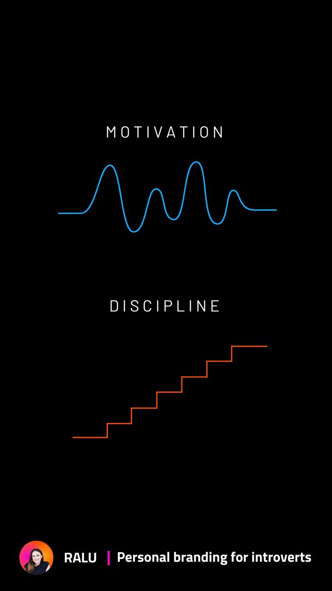
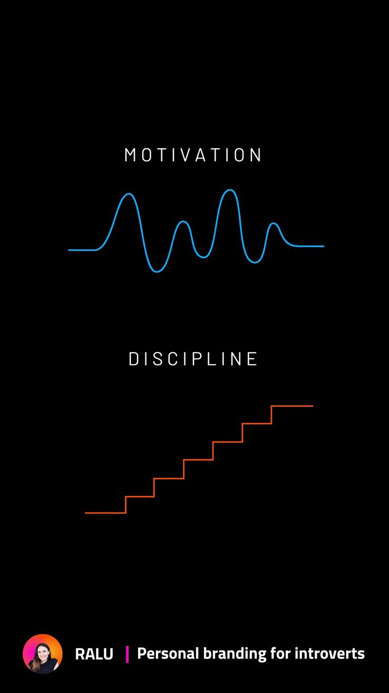

The word motivation comes from the Latin *motus*, meaning “to move towards,” “to go forward.” Motivation is what drives a person to act, to embark on a path, to pursue a goal. Without motivation, we would rarely move in the direction of something meaningful. It’s the initial spark that lights the desire to change, to improve, to start a new project. There are no people without motivation: it is an innate force that lives in each of us — a constant, even if sometimes quiet, presence.
However, motivation alone is not enough. By nature, it fluctuates — it comes and goes. How many times have we felt full of enthusiasm at the start of an activity — like working out, studying, reading, or writing — only to see that enthusiasm fade after a few days? It’s a common dynamic.
And this is where discipline comes into play. If motivation starts the engine, discipline is what keeps it running day after day. Discipline is what allows us to keep going even when the initial excitement wears off, when fatigue sets in, when distractions tempt us. It ensures consistency, the daily repetition of actions that move us toward our goals — regardless of how we feel. And it is this consistency, more than momentary passion, that determines long-term success.